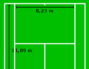
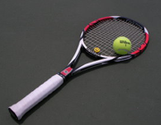
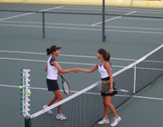
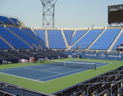
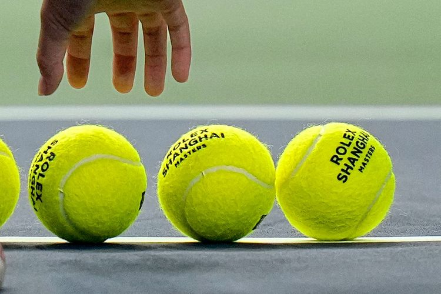
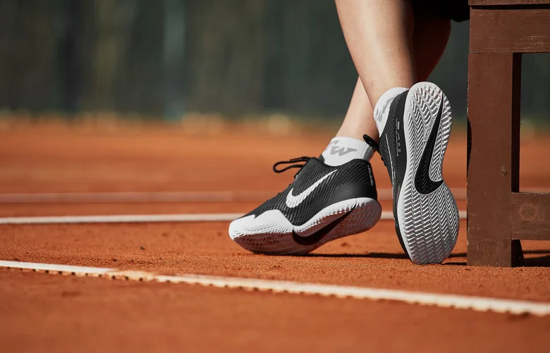
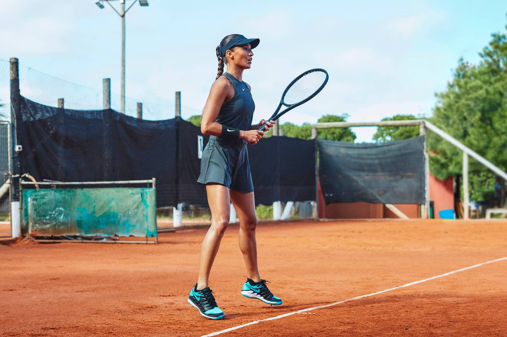
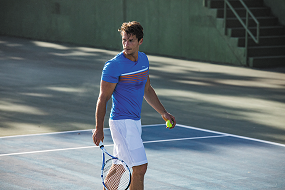
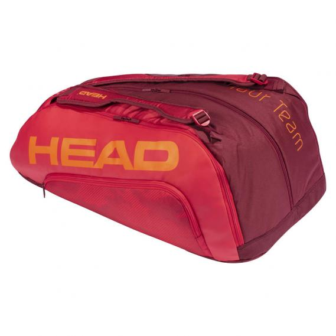
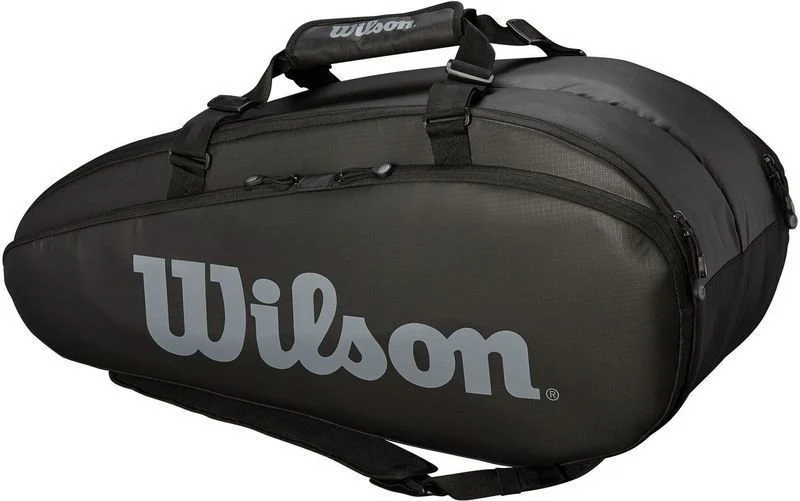

Das Spielfeld wird durch Linien begrenzt, die so genannten Grundlinien und Seitenlinien.
Zu Beginn eines Ballwechsels steht der Aufschlag, der diagonal in ein kleineres Feld, das Aufschlagfeld, gespielt werden muss.
Jedem Spieler stehen pro Punkt zwei Aufschlagsversuche zu.
Das Spielziel beim Tennis ist es, einen Tennisball einmal mehr als der Gegner über ein in der Mitte gespanntes Netz in sein Spielfeld zu spielen.
Dabei darf der Ball maximal einmal den Boden berühren, bevor er mit dem Tennisschläger zurückgespielt werden muss.
Der Ball kann auch direkt, ohne Bodenberührung, aus der Luft genommen werden.
Der Gewinn von sechs oder mehr Spielen führt zum Gewinn eines Satzes.
Wer mehrere Sätze gewonnen hat, hat das Match für sich entschieden. Die häufigsten Beläge von Tennisplätzen sind Sand, Rasen, Kunstrasen, Teppich oder Kunststoffgranulat.
Beim Tennis stehen sich zwei oder vier Spieler auf einem Tennisplatz gegenüber. Das Spielfeld ist rechteckig und misst 23,77 Mal 8,23 Meter beim Einzel bzw. 10,97 Meter beim Doppel.
In der Mitte befindet sich ein 0,914 Meter hohes Netz.
Wechselseitig schlagen die Tennisspieler den Ball über das Netz. Ziel ist es, den Tennisball so zu spielen, dass der Gegner diesen nicht trifft. Denn gelingt es einem Spieler nicht,
den Ball regelgerecht über das Netz zurück zu schlagen, bekommt der Kontrahent einen Punkt.
Dies sind die wichtigsten Tennis-Regeln auf einen Blick:
Ein Tennisspiel oder Match ist zeitlich nicht begrenzt und kann sogar mehrere Stunden dauern. Es geht über mindestens zwei Sätze. Ein Satz wiederum gliedert sich in mehrere Spiele.
   Ein Satz ist gewonnen, wenn ein Spieler sechs Spiele und zwei Spiele mehr als der Gegner für sich entschieden hat.
Ein 6:4 gilt also als Sieg, ein 6:5 nicht. In diesem Fall würde der Satz weiterlaufen. Steht es 6:6, wird die Tie-Break-Regel angewandt.
“Tie Break” bedeutet übersetzt “Punktgleichheit brechen”. Der Spieler, welcher zuerst 7 Punkte erreicht und mit einem Vorsprung von zwei Punkten führt, gewinnt den Satz.
Bei einem Stand von 6:6 wird also bis mindestens 8 gespielt.
Die Zählweise der Punkte ist beim Tennis speziell: Ein Spieler braucht vier Punkte, um ein Spiel für sich zu entscheiden.
Der erste Punkt wird mit 15:0 angezeigt, der zweite mit 30:0, der dritte mit 40:0, beim vierten Punkt ist das Spiel gewonnen. Eine Ausnahme gilt, wenn beide Spieler 3 Punkte haben, es also 40:40 steht.
In diesem Fall sind zwei Punkte in Folge notwendig, damit einer der Kontrahenten den Spielgewinn für sich verbuchen kann.
Bei Damen wird grundsätzlich auf zwei Gewinnsätze, auch “best-of-three” genannt, gespielt. Wer also zuerst zwei Sätze gewonnen hat, hat auch das Match für sich entschieden. Diese Form von Spielstruktur gilt auch bei vielen Herren-Wettbewerben. Ausnahme sind die großen Grand Slam Turniere: Hier spielen nur die Herren “best-of-five”, sie brauchen für einen Sieg entsprechend drei Gewinnsätze. Diese Differenzierung wird im Rahmen der Gleichberechtigungsbewegung im Tennis viel kritisiert. Zumindest wurden inzwischen die Preisgelder angepasst.
1.Tennisbälle: Tennis wird mit speziellen gelben Filzbällen gespielt.
2.Tennisschuhe: Spezielle Tennisschuhe bieten die erforderliche Unterstützung und & Traktion.
3.Tenniskleidung: Bequeme Kleidung ist wichtig für optimale Bewegungsfreiheit.
 4.Tennistasche: Eine Tennistasche bietet Platz für dein All Equipment
 